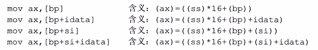

8086一共14个寄存器
通用寄存器（8个）
数组寄存器（4个）AH&AL＝AX(accumulator)
累加寄存器，常用于运算;在乘除等指令中指定用来存放操作数,另外,所有的I/O指令都使用这一寄存器与外界设备传送数据. BH&BL＝BX(base)
基址寄存器，常用于地址索引；CH&CL＝CX(count)
计数寄存器，常用于计数；常用于保存计算值,如在移位指令,循环(loop)和串处理指令中用作隐含的计数器. DH&DL＝DX(data)
数据寄存器，常用于数据传递。
累加寄存器，常用于运算;在乘除等指令中指定用来存放操作数,另外,所有的I/O指令都使用这一寄存器与外界设备传送数据.
基址寄存器，常用于地址索引；
计数寄存器，常用于计数；常用于保存计算值,如在移位指令,循环(loop)和串处理指令中用作隐含的计数器.
数据寄存器，常用于数据传递。
指针寄存器及变址寄存器（4个）SP（Stack Pointer）
堆栈指针，与SS配合使用，可指向目前的堆栈位置； BP（Base Pointer）
基址指针寄存器，可用作SS的一个相对基址位置； 如果指令中没有显性的给出段地址，段地址就默认在SS中 SI（Source Index）
源变址寄存器可用来存放相对于DS段之源变址指针；DI（Destination Index）
目的变址寄存器，可用来存放相对于 ES 段之目的变址指针。
堆栈指针，与SS配合使用，可指向目前的堆栈位置；
基址指针寄存器，可用作SS的一个相对基址位置；
如果指令中没有显性的给出段地址，段地址就默认在SS中
源变址寄存器可用来存放相对于DS段之源变址指针；
目的变址寄存器，可用来存放相对于 ES 段之目的变址指针。
段寄存器（4个）DS(DATA SEGMENT)数据段寄存器
用于定义数据 CS(CODE SEGMENT)代码段寄存器
用于存放代码 SS(STACK SEGMENT)堆栈段寄存器
用于存放入栈数据 ES(EXTRA SEGMENT)附加段寄存器
用于存放串操作的目的操作数和辅助存储 段寄存器的使用规定
用于定义数据
用于存放代码
用于存放入栈数据
用于存放串操作的目的操作数和辅助存储
其他寄存器
IP：instruction pointer 指令指针
与CS代码段配合使用，指向指令的偏移地址。
FR（flag register）或PSW（programme status word）标志/程序状态字寄存器
是一个特殊的寄存器，按位起作用，用来控制CPU的工作方式或存放相关指令的执行状态。有意义的有9位，其中6位状态位，3位控制位。
状态位
用来记录执行结果的状态
- Z（zero）F（结果为0）
- PF（结果中1的奇偶）
- S（sign) F（正负符号）
- C (carry) F（无符号数最高位进位值）
- O (overflow) F（结果溢出）
- AF（辅助进位）
控制位
- DF（方向标志位，控制串处理指令中SI,DI的增减）
- IF（中断允许）
- TF（是否允许单步中断跟踪调试）